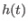
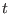
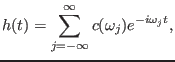
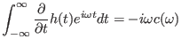
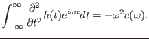

Next: Eigenmodes Up: Linearized ideal MHD equation Previous: Fourier transformation in time
In dealing with eigenmodes, we ususally encounter discrete frequency perturbations, i.e.,  is periodic function of  so that they contian only discrete frequency components. In this case, the inverse Fourier transformtion in Eq. (31) is replaced by the Fourier series, i.e.,
|  | (38) |
|  | (40) |
|  | (41) |
yj 2015-09-04